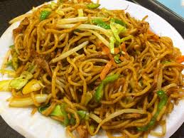

Chowmein Recipe

Chowmein is basically a tibetian dish.
- Cut chicken breasts into thin slices. Heat oil in a pan, season chicken with salt, and fry until the chicken is browned. Set aside.
- Wash and cut garlic, ginger, onions, capsicums, carrots, and cabbage. Chop the scallions and green garlic. Chop fresh coriander.
- Boil water and cook the noodles according to instructions on the package. Drain and reserve noodles when ready.
- Heat oil in a large wok (or skillet) over high heat. When the oil is hot, add garlic, stir-fry for 30 sec before adding ginger. Stir-fry for 15 sec. Lower the heat and stir for another 15 sec.
- Add onions. Stir until onions become translucent. Add carrots. Stir for 1 to 2 min.Add capsicums. Stir fry on high heat for 2 min.
- Add ¼ tsp turmeric powder, 2 tsp salt, 3 tsp coriander ground, and 2 tsp masala. Stir fry for 1 to 2 min. Add cabbage. Mix. Add scallions and green garlic. Mix thoroughly for about 2 min. Do not over-cook. Add 1 and half tbsp of soya sauce. Add 3 tbsp of tomato ketchup. Add 2 tsp parsley. Add fried chicken. Then, add the fresh coriander.
- Add noodles. Mix until combined.
Go back to homepage